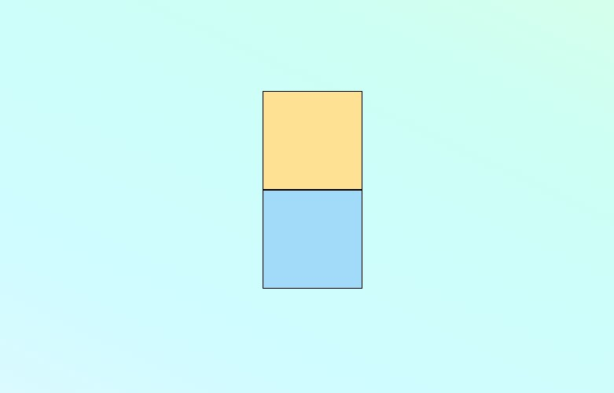
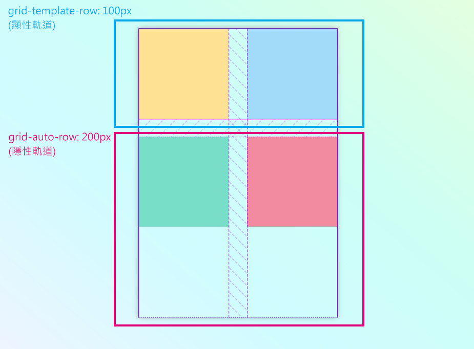
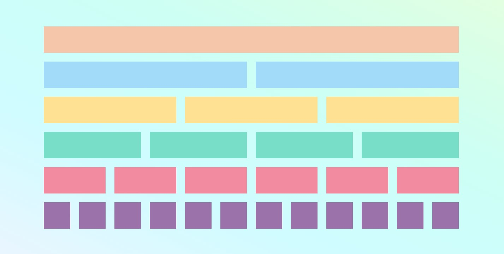
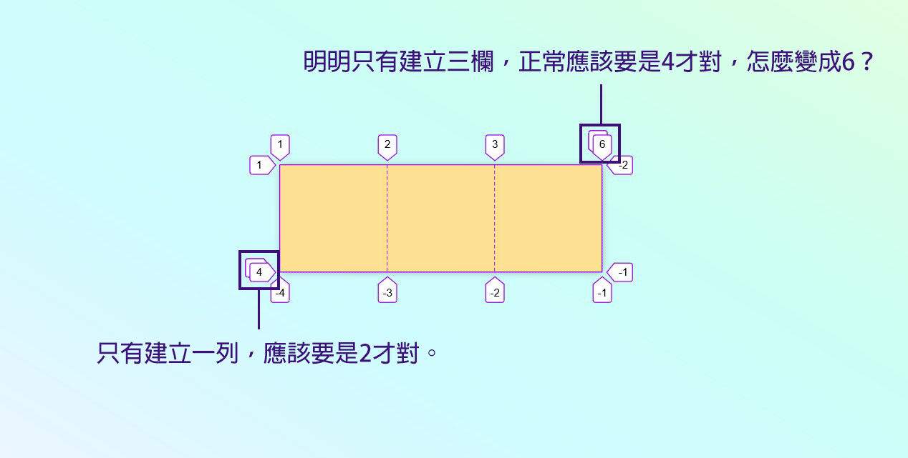
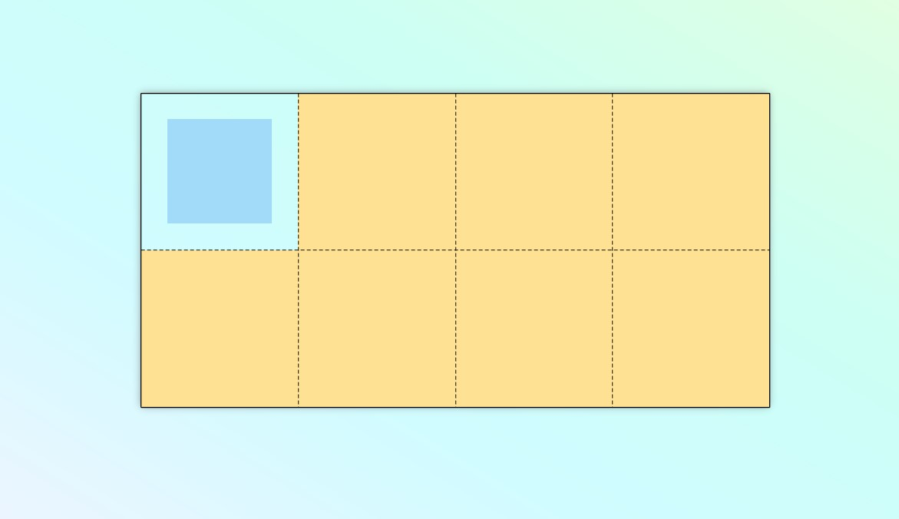

目前在網頁佈局的方式有很多種選擇，其中最主流的不外乎就是flex-box。
雖然 flex 確實足以處理許多版面，使用上也不算困難，但為了更增進自己的能力，讓自己在面對各種版型都能有應對之道，所以我決定學習另外一個也算是頗新穎的佈局方式，grid-box。
不過當我在找相關資料時，發現 grid 的相關中文教學似乎比較少一些（比起 flex），所以就決定自己來寫一篇文章，希望能夠為有需要的人提供一份資源。
另外，由於 grid-box 的概念可能比 flex-box 還要來得複雜一些（至少對我來說是這樣子），所以這篇文章的內容也會比較沉長些，可能會需要花點時間來閱讀，還請各位見諒一下。
最後希望大家都能夠透過這篇文章來真正理解 grid 的佈局方式，我相信多學一樣技能，對自己只有好，沒有壞。
關於 grid
在學習 grid 的語法前，我認為大家可以先了解一下 grid 的基本結構是長什麼樣子，接著才去學 grid 的相關屬性，這樣子的學習順序對你應該會比較有幫助。
認識欄與列
讓我們從建立一個最基本的 grid 網格開始：
1 | <div class="box"></div> |
1 | .box { |

先不用在意那些數字是什麼意思，總之你能看到，我們建立了一個四欄兩列的格子。
欄 = 每一個直排，英文為 “column” 。
列 = 每一個橫排，英文為 “row” 。
接著我們來看剛剛設定的每一個屬性吧：
1 | display: grid; |
代表我們在.box這個區塊中建立一個 grid 網格，就跟在使用 flex 時的display:flex是一樣的概念。
1 | grid-template-columns: 100px 100px 100px 100px; |
這是用來設定 「欄(column)」 的部分，代表每個欄的寬度為 100px，而我們設定了 4 次，所以總共就會產生 4 個欄。
1 | grid-template-rows: 100px 100px; |
這是用來設定 「列(row)」 的部分，代表每個列的寬度為100px，而我們設定了 2 次，所以總共就產生 2 個列。
所以，一個最基本的 grid 網格，就是由 「欄與列」 來組成的。
認識格線
在你認識欄與列後，讓我們回頭來談談那些數字，又是怎麼一回事吧？
一個 grid 網格 中，除了欄與列之外，還有一個東西叫做 「格線」。
格線是一個用來分割每個列跟欄的線，而每個格線都會有一個編號，這個編號會從 1 開始算起。
我知道你可能接著會想問，那麼負數又代表什麼？
其實格線除了用正數來表示以外，也可以用負數來表示，用中文來說的話就是 「倒數第幾個」 的意思。
那格線能夠做什麼？一樣讓我們用例子來舉例吧：
現在我們在剛剛建立好的 grid 網格中新增 grid元素
1 | <div class="box"> |
💡 註：這裡只有對方塊設定背景顏色（grid 元素在沒有設定寬高時，預設會填滿整個欄與列的空間）
所以你能看到，在我們還沒有對 grid 網格中的元素做任何設定時，元素會依照 「左 → 右」，「上 → 下」 這樣的順序來塞到每一個網格中。
那如果我們想要控制元素的位置呢？
沒有錯，這個時候格線就派上用場了。
這裡先介紹一個屬性：grid-column-start，可以用來指定 grid 元素的起始位置。
現在讓我們來更改紫色方塊的位置：
1 | .item--purple { |
💡 註：在沒有指定grid-column-end (終點位置) 時，grid 元素預設會跨到下一條格線 (2 → 3)。
這樣子我們就把紫色方塊放到以格線(2)為起始點的位置。
還記得我們說過格線也可以用負數來表示嗎？
讓我們在修改一下紫色方塊的位置：
1 | .item--purple { |
現在紫色方塊被放到以格線(-2)為起始點的位置。
我想這樣子你對於格線應該就有一些概念了。
不過，除了設定元素的起始位置以外，我們也可以設定元素的終點位置。
再讓我們介紹第二個屬性：grid-columns-end
我們一樣來控制紫色方塊的位置：
1 | .item--purple { |
這裡要特別提醒一下，雖然紫色方塊看起來是佔據第 2 到 第 3 欄的範圍，
但由於我們是以格線來做控制，所以正確的位置應該是 2 → 4，而不是 2 → 3 哦！
另外，剛剛都是以 欄(column) 來做介紹，不過除了 欄(column) 以外，我們也能夠控制 列(row) 的部分。
兩者的概念其實都是一樣的，只是從 欄(column) 變成 列(row) 而已，
這裡我把相關的屬性，以及縮寫形式，條列給各位參考：
1 | // 控制欄 |
最後附上 Codepen 給大家練習 ：
See the Pen grid-column-start / end & grid-row-start / end by jim (@jubeatt) on CodePen.
認識顯性格線與隱性格線
在你開始學習 grid 相關的屬性前，最後還有一件事情得知道。
其實格線本身還可以在區分為以下兩種：
顯性格線 (explicit tracks)隱性格線 (implicit tracks)
💡 註：tracks 這個單字的正統翻譯翻作「軌道 / 軌跡」，不過我個人還是喜歡用格線來稱呼。
使用grid-template-rows, grid-template-columns來產生出的格線，都叫做 顯性格線 (explicit tracks)。
那隱性格線呢？讓我們來看個例子吧：
1 | <div class="box"> |
1 | .box { |
嗯…看起來沒有什麼特別的。
這裡透過 Firefox 的開發者工具來查看，我們能發現一些不一樣的東西：
你會看到有三種格線，分別為：
虛線：代表顯性格線點線：代表隱性格線實線：代表顯性格線的起點 / 終點
實線的部分
我們在一開始透過grid-template-columns: 100px 100px;建立了兩個欄，所以左右兩端的實線代表顯性格線的起點與終點。
你可能會好奇，頂端那條顯性格線的起點（列）是怎麼回事，畢竟我們並沒有對列做設定不是嗎？
這個嘛，我是這樣理解的，有一句話叫做有始有終，所以我想在 grid 中也是這個道理，
既使我們沒有對列做設定，它也應該要有一個起始點。
虛線的部分
我們設定每一欄的寬度為100px，所以每100px就會有一條虛線來代表一欄的寬度。
點線的部分
我們並沒有使用grid-template-rows來設定列，所以這時候瀏覽器就自動幫我們產生了一條新的格線，這種格線就稱為 隱性格線(implicit tracks)。
要注意的一點是，在沒有做任何設定時，隱性格線的寬度是由 grid 元素來撐開，
也就是說，如果 grid 元素的高度（或寬度）為0px，隱性格線的寬度就會是0px。
參考下面這張圖：
🚀 Codepen：點這裡
要對隱性格線做設定，必須用grid-auto-rows, grid-auto-columns這兩個屬性。
我們對上面的範例做個調整：
1 | .box { |
🚀 Codepen：點這裡
💡 雖然我們現在設定了列的格線，不過由於我們設定的是隱性格線，所以你可以看到圖中的列（尾端）還是以點線來顯示。
為什麼需要隱性格線？
相信看到這裡後，你應該已經知道要怎麼分辨顯性格線與隱性格線。
不過你可能還有一個疑問，為什麼需要隱性格線呢？它又是用來做什麼的？
要了解這件事情，得先弄清楚一件事，什麼時候會產生隱性格線？
→ 隱性格線只有在 grid 元素超出顯性格線所定義的範圍時，才會產生。
以前面的例子來說，我們用 grid-template-columns來設定兩欄，但沒有設定列，就丟了兩個元素到 grid 網格中，這很顯然會超出顯性格線的範圍。
而這個時候如果沒有自動產生隱性格線的話，我們的 grid 網格可能會長的像這樣：
所以如果沒有隱性格線的話 → grid 網格會因為缺乏足夠的欄與列，而無法容納超出範圍的元素。
為了避免這問題，我們才需要隱性格線 → 使 grid 網格產生出足夠的欄與列，來容納超出範圍的元素。
最後，做一個小總結：
- 格線可以分成
隱性格線/顯性格線。 - 顯性格線是用
grid-templates-columns / rows做的設定。 - 隱性格線是用
grid-auto-columns / rows做的設定。 - 隱性格線只有在 grid 元素
超出顯性格線的範圍（或是沒有設定顯性格線）時，才會產生。 - 隱性格線的預設寬度是由
grid 元素來撐開。
以及一些額外補充：
- 超出顯性格線 grid 範圍的元素，會根據
grid-auto-flow的設定，來決定要放到下一列or下一欄。 grid-auto-columns / rows可以像grid-templates-columns / rows一樣設定多個值。
最後附上 Codepen 給大家練習 ：
See the Pen grid-explicit & implicit by jim (@jubeatt) on CodePen.
如果以上這些概念你都理解的話，接著就能開始學習 grid 的相關屬性囉！
gird 屬性列表
- display
- grid-template-rows & grid-template-columns
- grid-row & grid-column
- grid-auto-flow
- grid-auto-rows & grid-auto-columns
- grid-area & grid-template-areas
- column-gap & row-gap
- justify-items
- align-items
- place-items
- justify-content
- align-content
- place-content
- justify-self
- align-self
- place-self
- order
grid 的特別單位與函式
grid 中有一些特殊的單位或函式，能夠讓 grid 撰寫起來更方便，或是發揮更強大的功能。
span 關鍵字
前面有說過，我們能透過grid-row, grid-column來設定 grid 元素的位置。
但是當格線數量比較多的時候，通常就得一個一個數，這樣很不方便。
所以 grid 也提供了span這個關鍵字，讓你可以直接指定欄 / 列數，而不用再數格線。
用法：
- 如果是在
start上設定的話，就代表從end往前數過去。 - 如果是在
end上設定的話，就代表從start往後數過去。
1 | .item--yellow { |
🚀 Codepen：點這裡
fr 單位
fr 為fraction(分數)的縮寫。
💡 註 1：fr 的最小值為grid元素中的內容寬度（不會縮到比內容還要小），你也能想成 1fr = (auto, 1fr), min=auto, max=1fr。
💡 註 2：不知道你有沒有背過這些單字：fracture(斷裂), fragile(易碎的), fragment(碎片)，frag 是「破壞、斷、折」的字首，所以帶有這個字首的單字意思都會差不多，fraction 也是其中之一，所以能利用這個字首來幫助記憶。
fr 跟 flex 中的flex-grow有點像，能夠利用剩餘空間來分配給元素，我們直接看例子：
1 | .box { |

🚀 Codepen：點這裡
使用 fr 的時候必須要知道：
總空間有多大哪些東西佔據了多少的固定空間計算出剩餘空間fr的總分數值每個區塊的fr值
所以上面的例子能分析出：
- 總空間：
960px - 固定空間：
100px的間距(5個20px)，100px的方塊 - 剩餘空間：
960-100-100 = 760px - fr 的總分數值：
1+1+2+2+3 = 9 - 每個區塊的 fr 值：
1/9, 1/9, 2/9, 2/9, 3/9
這些東西都有之後，你就能利用剩餘空間 x fr值來計算出每個方塊的實際大小是多少。
使用 fr 的好處
- 假設想讓每個區塊大小一樣，不需要做任何計算，只要全部設為
1fr即可。 - 新增欄/列時，不用像使用
%一樣，得全部重新計算。 - 修改間距時，不用像使用
%一樣，得全部重新計算。 - 修改某個欄/列的寬度時，不用像使用
%一樣，得全部重新計算。
minmax()
用途：設定欄與列的最大最小值
就跟min-width和max-width的概念是一樣的，你可以指定每個欄列的最大與最小寬度。
1 | <div class="box"> |
1 | .box { |
🚀 Codepen：點這裡
💡 現在方塊最小只能縮到 50px，最大只能擴到 100px。
repeat()
用途：指定次數，把要重複的值寫進去。
假設我想要建立 100px, 150px 這樣的欄 5 次，就這樣子寫：
1 | .box { |
🚀 Codepen：點這裡
auto-fill & auto-fit
兩個都得搭配repeat()一起使用。
當你不想明確指定要有幾欄幾列，也不確定 grid 元素的數量時，這兩個屬性會很有幫助。
跟隱性格線有一點類似，但隱性格線的問題是：
- grid 元素只會往單一方向排列（欄或列）
- 必須要有 grid 元素存在，才會產生網格。
- 每當放入新的 grid 元素，就會一直產生新的網格，無法限制在一個範圍內。
auto-fill
用途：根據設定的尺寸，盡可能在 grid 空間中建立最多的欄或列。
💡 註 1：既使沒有放入 grid 元素，該網格佔據的空間依然會存在。
💡 註 2：會隨著容器寬度來動態更新網格的欄數。
1 | <div class="box"> |
1 | .box { |
🚀 Codepen：點這裡
你可以看到：
- grid 空間的寬度為 760px，每欄 100px，最多可以建立
7 欄。 - grid 空間的高度為 250px，每列 100px，最多可以建立
2 列。 - grid 空間中只有放入 5 個 grid 元素，但
空的網格依然存在。
並且能夠隨著 grid 空間的範圍動態更新網格：
🚀 Codepen：點這裡
auto-fit
用途：根據設定的尺寸，盡可能在 grid 空間中建立最多的欄或列。
💡 註 1：若是沒有放入 grid 元素，該網格佔據的空間會被折疊。
💡 註 2：會隨著容器寬度來動態更新網格的欄數。
1 | <div class="box"> |
1 | .box { |
🚀 Codepen：點這裡
你可以看到：
- grid 空間的寬度為 760px，每欄 100px，最多可以建立
7 欄 (注意格線編號)。 - grid 空間的高度為 250px，每列 100px，最多可以建立
2 列 (注意格線編號)。 - grid 空間中只有放入 5 個 grid 元素，但
空的網格會被折疊。
並且能夠隨著 grid 空間的範圍動態更新網格：
🚀 Codepen：點這裡
⚠ auto-fill & auto-fit 使用時的小陷阱
回顧一下剛剛提到這兩者的差異：
- fit：空的網格空間會被
折疊成 0px - fill：空網格格空間會仍然
維持設定的空間
這跟我們接下來要談的東西有很大的關係，所以請各位務必記得這兩個差異。
接著來看個例子：
1 | <div class="wrap"> |
1 | .box--fit { |
結果如下：
🚀 Codepen：點這裡
這裡想問的是，同樣都是填滿，也同樣都放入兩個元素，你能解釋出為什麼會這樣的差異嗎？
你可以先自己思考看看，再來看下面的解釋。
如果不太清楚的話，參考這張圖：
所以最後留給各位一個問題，看看各位是否真的有理解這兩者的差異。
假設現在的需求是希望不管放入多少元素，元素都要把整個grid空間填滿，請問該用auto-fit還是auto-fill呢？
display
用途：建立 grid 網格
我知道介紹這個屬性好像有點多餘，不過你知道其實它有兩個值可以設定嗎？
1 | <div class="container"> |
1 | .box { |

🚀 Codepen：點這裡
grid-template-rows & grid-template-columns
用途：設定顯性格線(列)的寬度 & 設定顯性格線(欄)的寬度
讓我們來建立一個 4 欄 2 列的 grid 網格。
建立基本的 HTML：
1 | <div class="box"> |
建立 grid 網格以及設定：
1 | .box { |

🚀 Codepen：點這裡
如果覺得上面這樣寫有點麻煩的話，你也可以搭配repeat()來使用：
1 | .box { |
自訂義格線名稱
使用grid-template-columns / rows的時候，是可以自定義格線的名字的。
💡 只有 grid-template 可以，grid-auto 不行。
1 | .box { |
畫成圖的話會長的像這樣：
接著 grid 元素就能拿我們取的名字來設定。
1 | .yellow { |
🚀 Codepen：點這裡
自定義格線名稱時的注意事項
🎉 註：這個問題是一位臉書中的社友幫助我解開的，非常謝謝你幫助我解惑。
這邊要特別注意一件事，當你想幫格線取名稱時，請盡量避免在名稱中使用-start與-end這兩個關鍵字。
讓我們直接用例子來做解說：
1 | <div class="box"> |
1 | .box { |
假設在沒做任何設定時的網格與元素長這樣：
現在我們對黃色方塊做以下設定：
1 | .item--yellow { |
🚀 Codepen：點這裡
你能看到黃色方塊居然自動移動到了Cline3-start這條格線上的位置。
我個人把這個機制看作是一種備用機制，這個備用機制會在當你指定一條不存在的格線名稱時觸發。
在我們剛剛使用指定Cline3的時候，grid-column-start會試著去找名字叫做Cline3的這條格線，但它發現並沒有叫做Cline3的格線，所以它會自動幫你在Cline3的後面加上-start這個關鍵字。
所以當加入這個關鍵字後，grid-column-start會再次尋找是否有Cline3-start這條格線，而這時就能正確找到我們在一開始取名為Cline3-start的那條格線。
而這也就是為什麼我們明明沒有指定正確的名稱也能夠找到格線的位置。
所以即便你現在把格線名稱取成這樣：
1 | .box { |
1 | .item--yellow { |
最後的結果也是會跟剛剛是一樣的。（找不到 Cline3-start → 改找 Cline3-start-start）
🚀 Codepen：點這裡
但如果你現在又改成這樣：
1 | .box { |
1 | .item--yellow { |
🚀 Codepen：點這裡
此時黃色方塊就消失了，為什麼？
套用剛剛的機制，當Cline3找不到時，它會改找Cline3-start這條格線，但由於我們取的名稱為Cline3-abcde，所以即便它採取了這個備用機制，它也無法找到正確的位置，因此黃色方塊才會消失。
至於-end又會發生在什麼情況呢？
其實跟剛剛都是一樣的道理，只不過-end是在使用grid-column-end來做設定的時候發生。
所以下次再幫格線命名的時候，建議最好避免使用-start，-end這兩個關鍵字。
一個格線可以有一個以上的格線名稱
1 | .box { |
這裡利用格線名稱來設定黃色方塊的位置。
1 | .item--yellow { |
🚀 Codepen：點這裡
當有相同的格線名稱時
當有相同的格線名稱時，可以寫成格線名稱 + 指定數字來指定格線：
1 | .box { |
1 | .yellow { |

🚀 Codepen：點這裡
grid-row & grid-column
用途：利用格線來設定 grid 元素 的位置與範圍
grid-row & grid-column 都是縮寫的形式，請參照以下：
1 | .item { |
此屬性前面已經介紹過，可以參考前面的範例。
grid-auto-flow
用途：設定grid元素的排列方式
💡 註：預設值為row
運作流程
我看到大部分的教學是以隱性格線的設定(grid-auto) 來做舉例，但這個屬性並不是只能用在隱性格線，其實在顯性格線上(grid-template)也是可行的。
如果只用一列一列排序跟一欄一欄排序這個詞來記的話，在顯性或隱性之間會很混淆（我自己是這樣），
因此我分析了一下它的實際運作方式，發現原來是我少了一些步驟，才會常常搞混。
簡單來說，可以拆成以下動作：
- 觀察目前的網格中的
總欄數與總列數 - 當網格中的
欄或列還沒被填滿時，grid 元素會先根據 grid-auto-flow 的值來決定要填滿欄還是列。 - 如果是
column(欄)→填滿欄，如果是row(列)→填滿列。 - 當網格中的
欄或列被填滿時，grid 元素才會跳到下一欄或下一列。
💡 註：所以你可以發現，跳到下一欄或下一列其實是最後一步才做的動作。
記憶小口訣
- grid-auto-flow:
row→先把列填滿，再跳下一列。 - grid-auto-flow:
column→先把欄填滿，再跳下一欄。
設定顯性格線的情況
直接來看例子：
1 | <div class="box"> |
1 | .box { |
你可以看到，grid 元素會先把第一個列給填滿，接著在放到第二個列。
🚀 Codepen：點這裡
接著做一點調整：
1 | .box { |
現在 grid 元素會先把第一個欄給填滿，接著在放到第二個欄，以此類推。
🚀 Codepen：點這裡
設定隱性格線的情況
直接來看例子：
1 | <div class="box"> |
1 | .box { |
由於這裡沒有設定顯性格線，所以你能看到 grid 元素會直接往下一個列來擺放。
💡 註：因為沒有設定顯性格線，所以代表目前的總欄數 / 總列數的數量皆為1。
🚀 Codepen：點這裡
再做一點調整：
1 | .box { |
跟剛剛一樣，grid 元素會直接往下一個欄來擺放。
🚀 Codepen：點這裡
解決跳格的問題
grid-auto-flow 其實還有一個屬性值是dense，主要是用來解決grid元素自動跳格的問題。
這裡直接看例子會比較清楚：
🚀 Codepen：點這裡
簡單解釋一下圖中的設定：
- 設定
10 欄的網格空間，列數不限制（不設定）。 藍色方塊會佔據 6 欄 2 列粉色方塊會佔據 2 欄綠色方塊會從最尾端的位置向前佔據 5 欄編號為 9 倍數的方塊會佔據 2 欄
你能看到，一排最多只有 10 欄，所以編號6的藍色方塊只能放到下一排，導致後面的方塊也跟著往後排。
綠色方塊也一樣，因為欄數不夠的關係，放到下一排，並導致後面的方塊也跟著往後排。
現在讓我們在 grid 網格中加入dense的設定：
1 | .box { |
🚀 Codepen：點這裡
看起來整齊多了！雖然編號6的藍色方塊一樣被放到了下一排，但是現在後面的[7] [8] [9] [10] 方塊沒有跟著被放到下一排，而是被放到第一排裡去。
這是就是dense的作用，當編號6的藍色方塊放不下時，它會繼續從後面的方塊中找出能夠被填進去的方塊。
不過方塊的順序也會因為這樣而亂掉，這一點要多留意。
最後做個補充，dense是跟著row / column的設定來執行的，
所以如果你希望排列方式是以column來排列，你可以這樣子寫：
1 | .box { |
💡 註：由於預設的排列方式為 row，所以剛剛才可以只寫一個 dense。
🚀 Codepen：點這裡
grid-auto-rows & grid-auto-columns
用途：設定隱性格線(列)的寬度 & 設定隱性格線(欄)的寬
再次提醒，記得要分清楚 grid-template 與 grid-auto 這兩者的差異：
- grid-template = 設定顯性格線
- grid-auto = 設定隱性格線
當 grid 網格中的元素超過grid-template的設定範圍時，就會套用grid-auto的設定。
例如：
1 | <div class="box"> |
1 | .box { |

你也可以不寫grid-template，只寫grid-auto，這樣子就可以建造出固定的寬度的欄與列。
1 | <div class="box"> |
1 | .box { |
這樣子不論你在 grid 網格中放了多少個元素，它都會按照grid-auto的設定下去放置。
如果你希望是 grid 元素是以垂直來排列，記得再加上這一句：
1 | .box { |
最後，我們參照 960 grid，來做個相同概念的網格空間：

🚀 Codepen：點這裡
grid-area & grid-template-areas
用途：對 grid 元素取名稱 & 用取好的名稱來排位置
其實這個屬性比較偏向好玩用，我個人認為實際上並不實用，可以了解一下就好。
💡 註 1：一旦對 grid 元素取了名子，就得透過 grid-template-areas 來指定位置，否則grid元素不會自動被放入grid網格中。
1 | <div class="box"> |
1 | // 對 grid 元素做設定 |
1 | .box { |

另外，如果你不喜歡小粉，你希望小粉從這個世界上消失的話，也可以這樣子寫：
1 | .box { |

🚀 Codepen：點這裡
使用 grid-area 的一些小問題
🎉 註：這個問題是一位臉書中的社友幫助我解開的，非常謝謝你幫助我解惑。
一旦你對一個 grid 元素取了名字，且又沒有透過grid-template-areas把這個 grid 元素給放到網格中，你就會發現格線的編號會超出預期的狀況，讓我們看以下的例子：
1 | <div class="box"> |
我們對每一個 grid 元素取名字。
1 | .item--yellow { |
但我們只在網格中放入小黃：
1 | .box { |

🚀 Codepen：點這裡
其實這之中發生了一件事情，讓我們用放非常大的倍率來重新看一次。
所以其實並不是格線的編號亂掉了，而是當你使用grid-area幫元素取名稱後，又沒有幫他放置到網格中時，這個時候就會自動產生出兩條隱性格線，所以你才會感覺到格線編號自動被加了2。
如果你有正確的把每一個被命名的 grid 元素都放入到網格中，這個問題就不會發生了。
1 | .box { |
🚀 Codepen：點這裡
所以…如果沒什麼特殊原因的話，不要做這種幫元素取名稱，卻又不幫他安排位置的這種事情。
（這就好像你買了電影票卻沒有被安排座位一樣。）
grid-template-areas 的使用規則
grid-template-areas 必須遵守下列規則，並不是想怎麼排就怎麼排：
元素必須連續，不可以斷開
1 | .box { |
會重複出現的元素，組合起來一定要是一個矩形
1 | .box { |
每一列的數量都要一樣
1 | .box { |
所以…使用上確實不是那麼方便，但就是好玩吧！
grid-area 的其他用途
grid-area除了對 grid 元素命名以外，也是設定 grid 元素位置的縮寫屬性，請參考這個格式：
1 | // ========= 列格線的起始點 / 欄格線的起始點 / 列格線的終點 / 欄格線的終點 |
看得有點眼花？我是這樣記的 → 先設雙方的起點，在設雙方的終點。
這裡也舉個例子：
1 | <div class="box"> |
1 | .box { |
🚀 Codepen：點這裡
grid-template-areas 格線的自動命名機制
在使用grid-template-areas來指定 gird 元素的位置時，每一個格線都會自動以grid-area的名稱來命名，例如：
1 | .box { |
- 小黃區塊的
起始格線(欄/列)會自動被命名為小黃-start - 小黃區塊的
終點格線(欄/列)會自動被命名為小黃-end - 小粉、小藍以此類推
所以如果我們要移動小紫到小黃-start(欄) 及小黃-end(欄)的位置：
1 | .item--purple { |
🚀 Codepen：點這裡
column-gap & row-gap & gap
用途：設定欄與列之間的距離
💡 註：grid-column-gap & grid-row-gap & grid-gap是某些舊版瀏覽器的非標準寫法，故這裡就不再列出。
1 | .box { |

🚀 Codepen：點這裡
justify-items
用途：控制所有grid元素在「橫向」的對齊位置
stretch 填滿整個橫向空間 (預設值)
💡 註：當 grid 元素沒有設定寬度時才會生效。
1 | .box { |
🚀 Codepen：點這裡
start 對齊橫向空間的起端
💡 註：當 grid 元素有設定寬度時才會生效。
1 | .box { |
🚀 Codepen：點這裡
center 對齊橫向空間的中間
💡 註：當 grid 元素有設定寬度時才會生效。
1 | .box { |
🚀 Codepen：點這裡
end 對齊橫向空間的尾端
💡 註：當 grid 元素有設定寬度時才會生效。
1 | .box { |
🚀 Codepen：點這裡
align-items
用途：控制所有grid元素在「直向」的對齊位置
stretch 填滿整個直向空間 (預設值)
💡 註：當 grid 元素沒有設定高度時才會生效。
1 | .box { |

🚀 Codepen：點這裡
start 對齊直向空間的起端
💡 註：當 grid 元素有設定高度時才會生效。
1 | .box { |
🚀 Codepen：點這裡
center 對齊直向空間的中間
💡 註：當 grid 元素有設定高度時才會生效。
1 | .box { |
🚀 Codepen：點這裡
end 對齊直向空間的尾端
💡 註：當 grid 元素有設定高度時才會生效。
1 | .box { |
🚀 Codepen：點這裡
place-items
用途：同時設定 align-items 與 justify-items
- 第一個值設定
align-items - 第二個值設定
justify-items
💡 註 1：若只設定一個值，則該值會同時指定給兩個屬性。
💡 註 2：請記得兩個屬性的規則，什麼時候 grid 元素該有寬/高度，什麼時候不該有寬/高度。
💡 註 3：IE 不支援這個縮寫法。
1 | .box { |
🚀 Codepen：點這裡
快速水平 / 垂直置中
1 | .box { |
🚀 Codepen：點這裡
justify-content
用途：分配 grid 空間中「橫向」的剩餘空間
💡 註：grid 空間中必須要有剩餘的空間，這個屬性才有用。
在學這個屬性前，建議先拆成以下的結構，比較不會搞混：
grid網格grid空間grid元素
1 | // grid空間 |
items 與 content 的差異
justify-items / align-items設定的是grid 元素在grid 網格中的位置。justify-content / align-content設定的是grid 網格在grid 空間中的位置。
start 將橫向的剩餘空間丟到最尾端
💡 註：你可以想像是把多餘空間移到後面後， grid 網格就會往起點處(start)貼齊。
1 | .box { |
🚀 Codepen：點這裡
end 將橫向的剩餘空間丟到最頭端
💡 註：你可以想像是把多餘空間移到後面後， grid 網格就會往終點處(end)貼齊。
1 | .box { |
🚀 Codepen：點這裡
center 將橫向的剩餘空間分配到左右兩側
💡 註：你可以想像是把多餘空間分配到兩側後， grid 網格就會往中間處(center)貼齊。
1 | .box { |
🚀 Codepen：點這裡
space-around 將橫向的剩餘空間平均分配到 grid 元素之間以及左右兩側
💡 註 1：grid 元素之間保留相等的剩餘空間
💡 註 2：左右兩側保留 grid 元素 1/2 的剩餘空間
1 | .box { |
🚀 Codepen：點這裡
space-between 將橫向的剩餘空間平均分配到 grid 元素之間
💡 註： 只有 grid 元素之間會分配到剩餘空間，左右兩側不會。
1 | .box { |
🚀 Codepen：點這裡
space-evenly 將橫向的剩餘空間平均分配到 grid 元素之間以及左右兩側
💡 註： grid 元素之間與左右兩端的剩餘空間均相等。
1 | .box { |
🚀 Codepen：點這裡
align-content
用途：分配 grid 空間中「直向」的剩餘空間
💡 註：grid 空間中必須要有剩餘的空間，這個屬性才有用。
start 將直向的剩餘空間丟到最尾端
💡 註：你可以想像是把多餘空間移到後面後， grid 網格就會往起點處(start)貼齊。
1 | .box { |
🚀 Codepen：點這裡
end 將橫向的剩餘空間丟到最頭端
💡 註：你可以想像是把多餘空間移到後面後， grid 網格就會往終點處(end)貼齊。
1 | .box { |
🚀 Codepen：點這裡
center 將直向的剩餘空間分配到左右兩側
💡 註：你可以想像是把多餘空間分配到兩側後， grid 網格就會往中間處(center)貼齊。
1 | .box { |
🚀 Codepen：點這裡
space-around 將直向的剩餘空間平均分配到 grid 元素之間以及上下兩側
💡 註 1：grid 元素之間保留相等的剩餘空間
💡 註 2：上下兩側保留 grid 元素 1/2 的剩餘空間
1 | .box { |
🚀 Codepen：點這裡
space-between 將直向的剩餘空間平均分配到 grid 元素之間
💡 註： 只有 grid 元素之間會分配到剩餘空間，上下兩側不會。
1 | .box { |

🚀 Codepen：點這裡
space-evenly 將橫向的剩餘空間平均分配到 grid 元素之間以及上下兩側
💡 註： grid 元素之間與上下兩端的剩餘空間均相等。
1 | .box { |
🚀 Codepen：點這裡
place-content
用途：同時設定 align-content 與 justify-content
- 第一個值設定
align-content - 第二個值設定
justify-content
💡 註 1：若只設定一個值，則該值會同時指定給兩個屬性。
💡 註 2：IE 不支援這個縮寫法。
1 | .box { |
🚀 Codepen：點這裡
justify-self
用途：控制單一個grid元素在「橫向」的對齊位置
stretch 填滿整個橫向空間 (預設值)
💡 註：當 grid 元素沒有設定寬度時才會生效。
1 | .item { |
🚀 Codepen：點這裡
start 對齊橫向空間的起端
💡 註：當 grid 元素有設定寬度時才會生效。
1 | .item { |
🚀 Codepen：點這裡
center 對齊橫向空間的中間
💡 註：當 grid 元素有設定寬度時才會生效。
1 | .item { |
🚀 Codepen：點這裡
end 對齊橫向空間的尾端
💡 註：當 grid 元素有設定寬度時才會生效。
1 | .item { |
🚀 Codepen：點這裡
align-self
用途：控制單一個grid元素在「直向」的對齊位置
stretch 填滿整個直向空間 (預設值)
💡 註：當 grid 元素沒有設定高度時才會生效。
1 | .item { |
🚀 Codepen：點這裡
start 對齊直向空間的起端
💡 註：當 grid 元素有設定高度時才會生效。
1 | .item { |
🚀 Codepen：點這裡
center 對齊直向空間的中間
💡 註：當 grid 元素有設定高度時才會生效。
1 | .item { |
🚀 Codepen：點這裡
end 對齊直向空間的尾端
💡 註：當 grid 元素有設定高度時才會生效。
1 | .item { |
🚀 Codepen：點這裡
place-self
用途：同時設定 align-self 與 justify-self
- 第一個值設定
align-self - 第二個值設定
justify-self
💡 註 1：若只設定一個值，則該值會同時指定給兩個屬性。
💡 註 2：請記得兩個屬性的規則，什麼時候 grid 元素該有寬/高度，什麼時候不該有寬/高度。
💡 註 3：IE 不支援這個縮寫法。
1 | .item { |

🚀 Codepen：點這裡
order
用途：設定grid元素的前後順序
其實就和flex中的 order 是同一個概念，每一個 grid 元素的 order 預設值皆為0。
order 值越大的 grid 元素，會被放在越前面。
order 值越小的 grid 元素，會被放在越後面。
💡 註：要記得留意當下的資料流向，哪個方向代表前面？哪個方向代表後面？`
1 | <!-- 原本的排序(左 → 右) --> |
1 | // 原本的排序(左 → 右) |
由於每個元素的 order 值都相等，所以會依照 HTML 的順序來排列：
黃→ 藍 → 綠 → 粉
以下我們透過修改 order 值，來把順序更改成：
粉→ 綠 → 藍 → 黃
1 | // 反過來排序(右 → 左) |
💡 在我們沒有設定 <html> 的 dir屬性時，預設的資料流向會是「由左 → 右」(ltr)。
🚀 Codepen：點這裡
參考資料
CSS | 所以我說那個版能不能好切一點？ - Grid 基本用法
GRID GARDEN
Fractional unit (FR) overview
A Complete Guide to Grid
[CSS] 關於 Grid Layout 的使用姿勢
【CSS】Grid 佈局總結
30 天 CSS 隨手筆記 - 第 09 天 - OMG… Grid Layout~!! ( 5/7 - item 屬性 )
The Difference Between Explicit and Implicit Grids
CSS GRID: Implicit vs Explicit Tracks — 5 of 25
CSS Flex & Grid 排版詳解（下）：Oh My Grid!
GRID: A simple visual cheatsheet for CSS Grid Layout
Grid Layout 三部曲：auto-fill ? auto-fit ? 我們不一樣。